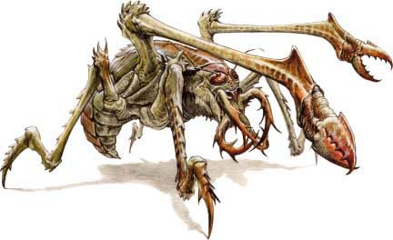
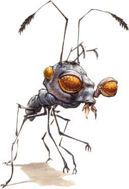
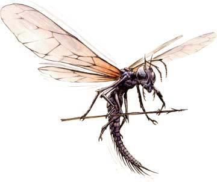

高度纪律化的蚁形生物种族，被称为弗米蚁族，拥有多个特化的亚种，每个亚种都致力于对巢群福祉有益的不同方面。没有单个个体是重要的――除了蚁后，其他弗米蚁会以生命保护它。
下述三种弗米蚁亚种是对《怪物图鉴》（包括工蚁、兵蚁、监工、蚁卫和蚁后）中所述亚种之外的补充。
多数弗米蚁通常具有攻击性，试图制服它们遭遇的所有生物。如果它们感知到对其蚁后哪怕最轻微的威胁，也会立即发起攻击并战斗至死。任何弗米蚁在接到上级命令时也会立即发起攻击。
蜂巢思维 (Hive Mind)（Ex）：所有在其蚁后 50 英里范围内的弗米蚁都处于持续的心灵感应沟通中。如果其中一个知晓某种特定危险，则所有个体都知晓。如果群体中有一个个体未处于措手不及状态，则所有个体都不视为措手不及。除非群体中所有弗米蚁都被夹击，否则其中没有一个会被视为被夹击。
免疫 (Immunities)（Ex）：弗米蚁对寒冷、石化及毒素效果免疫。
异界生物特性 (Outsider Traits)：弗米蚁拥有黑暗视觉（60 英尺范围），且它们不能被复活或复生（但祈愿术或神迹术可以使其复生）。
抗力 (Resistances)（Ex）：所有弗米蚁拥有火焰、闪电及音波抗力 20。
大型异界生物（跨位面，守序）

| 生命骰： | 8d8+32 (68 生命值) |
| 先攻： | +5 |
| 速度： | 40 英尺 |
| 防御等级： | 25 (�C1 体型，+1 敏捷，+15 天生护甲)，接触 10，措手不及 24 |
| 基本攻击／擒抱： | +8/+18 |
| 攻击： | 啮咬 +13 近战 |
| 全力攻击： | 啮咬 +13 近战 及 2 爪抓 +11 近战 及 尾刺 +11 近战 |
| 伤害： | 啮咬 2d6+6/17�C20/×3，爪抓 1d8+3，尾刺 2d4+3 |
| 面宽／触及： | 10 英尺/5 英尺 |
| 特殊攻击： | 酸液喷溅，强化重击，蜂巢思维，毒素 |
| 特殊能力： | 酸液免疫，免疫，异界生物特性，抗力，法术抗力 20 |
| 豁免： | 强韧 +10，反射 +7，意志 +7 |
| 属性： | 力量 22，敏捷 13，体质 19，智力 10，感知 12，魅力 11 |
| 技能： | 平衡 +12，攀爬 +17，躲藏 +8，跳跃 +17，聆听 +12，潜行 +12，侦察 +12，生存 +12 |
| 专长： | 精通重击（啮咬），精通先攻，多重攻击 |
| 地域： | 任意陆地与地下（机械境） |
| 组织： | 独行，小队 (2�C4)，或部队 (6�C11) |
| 挑战等级： | 8 |
| 宝物： | ― |
| 阵营： | 总是守序中立 |
| 进化： | 9�C12 HD（大型）；12�C24（超大型） |
装甲蚁是突击部队，率领冲锋陷阵并撕碎任何阻挡它们的障碍。它们冷酷无情，被派往最危险的境地。
装甲蚁体型庞大、装甲精良，看起来更像巨型跳蚤，而非其蚁形的弗米蚁亲族。它们的上颚巨大，拥有末端为强力爪子的修长双臂。
装甲蚁不会说话。
装甲蚁冲入最激烈的战斗中心，在那里它们能造成最大的破坏。它们通常在近战前先喷出一股酸液。因为它们自身对酸液免疫，所以即使在混战中，它们也会在其他装甲蚁所在的区域使用酸液喷溅。
装甲蚁可以用召唤怪物 VII法术来召唤。
酸液喷溅 (Acid Spray)（Ex）：装甲蚁可以其尾部的腺体喷溅出复盖 20 英尺爆发范围的酸液，对该区域内所有事物造成 3d8 点强酸伤害。一旦装甲蚁使用了此能力，它在 1d4 轮内无法再次使用。成功的反射豁免（DC 17）可使伤害减半。
强化重击 (Augmented Critical)（Ex）：由于其强化重击能力和专长"精通重击（啮咬）"，装甲蚁在自然攻击骰掷出 17�C20 时，啮咬攻击即构成重击威胁。啮咬攻击成功重击时，装甲蚁造成三倍伤害。
毒素 (Poison)（Ex）：装甲蚁每次成功的尾刺攻击都会传递其毒素（强韧豁免 DC 18 则无效）。初始伤害和后续伤害相同（1d6 点力量伤害）。
中型异界生物（跨位面，守序）

| 生命骰： | 9d8+18 (58 生命值) |
| 先攻： | +6 |
| 速度： | 40 英尺 |
| 防御等级： | 17 (+2 敏捷，+5 天生护甲)，接触 12，措手不及 15 |
| 基本攻击／擒抱： | +9/+10 |
| 攻击： | 尾刺 +10 近战 |
| 全力攻击： | 尾刺 +10 近战 |
| 伤害： | 尾刺 2d4+1 |
| 面宽／触及： | 5 英尺/5 英尺 |
| 特殊攻击： | 蜂巢思维，毒素，类法术能力 |
| 特殊能力： | 全域视野，战术评估，免疫，异界生物特性，抗力，法术抗力 23，心灵感应 250 英尺 |
| 豁免： | 强韧 +8，反射 +8，意志 +10 |
| 属性： | 力量 12，敏捷 15，体质 14，智力 18，感知 19，魅力 17 |
| 技能： | 攀爬 +11，工艺（任一）+13，交涉 +15，躲藏 +12，聆听 +16，潜行 +11，搜索 +13，察言观色 +14，侦察 +16，生存 +13 (+15 追踪时) |
| 专长： | 警觉，精通先攻，追踪 |
| 地域： | 任意陆地与地下（机械境） |
| 组织： | 小队 (2�C4) 或分队 (2�C4 只加 7�C18 只工蚁和 6�C11 只兵蚁) |
| 挑战等级： | 11 |
| 宝物： | ― |
| 阵营： | 总是守序中立 |
| 进化： | 10�C13 HD（中型）；13�C27 HD（大型） |
观察蚁比监工蚁（见《怪物图鉴》）要弱。它有两组眼睛――一组大的在其头部正面，另一组较小的在其头部两侧，这赋予了它全向视野。其触角比其他亚种更大，其手臂末端是用于操作而非战斗的小而灵巧的手。
和监工蚁一样，观察蚁也没有嘴，仅通过心灵感应交流。观察蚁懂得弗米蚁语和通用语。
观察蚁会尽量避免卷入近战。它们留在后方，以便能够推断入侵者的行为和战术，供其他弗米蚁利用。除了使用其战术评估能力外，观察蚁还试图确定入侵者可能拥有多少以及何种魔法。
观察蚁可以用召唤怪物IX法术来召唤。
毒素 (Poison)（Ex）：观察蚁每次成功的尾刺攻击都会传递其毒素（强韧豁免 DC 16 则无效）。初始伤害和后续伤害相同（1d6 点智力伤害）。
类法术能力 (Spell-Like Abilities)：随意施展――魅惑怪物 (charm monster)，锐耳术/鹰眼术 (clairaudience/clairvoyance)，侦测混乱 (detect chaos)，侦测魔法 (detect magic)，侦测思想 (detect thoughts)，识破隐形 (see invisibility)，真知术 (true seeing)。施法者等级 12 级；豁免 DC 13 + 法术等级。
全域视野 (All-Around Vision)（Ex）：观察蚁异常警觉且谨慎。它们两组不眨的眼睛使它们在侦察和搜索检定上获得+4种族加值，并且它们不能被夹击。
战术评估 (Evaluation)（Ex）：观察蚁那令人难以置信的思维能在瞬间评估并分解敌人的强项和弱点。
对于观察蚁能够目视看到一个单一对手（魔法手段，包括鹰眼术，无效）的每一整轮战斗，每个与该蜂巢思维保持接触的弗米蚁在对该对手的攻击检定上获得+1洞察加值。此效果每轮战斗累积，没有上限。
此效果持续到观察蚁被杀死、击昏、目盲或一整轮无法看到目标为止。一旦观察蚁再次看到目标，该加值从+1每轮开始重新计算。
如果多个观察蚁注视同一个目标，该加值不会提升。其他弗米蚁可以处理来自任何数量观察蚁注视多个目标的信息。
心灵感应 (Telepathy)（Su）：观察蚁可以与250英尺内任何拥有语言的生物进行心灵感应交流。
中型异界生物（跨位面，守序）

| 生命骰： | 6d8+12 (39 生命值) |
| 先攻： | +4 |
| 速度： | 20 英尺，飞行 60 英尺（良好） |
| 防御等级： | 19 (+4 敏捷，+5 天生护甲)，接触 14，措手不及 15 |
| 基本攻击／擒抱： | +6/+8 |
| 攻击： | 啮咬 +8 近战，或尖刺 +10 远程 |
| 全力攻击： | 啮咬 +8 近战 及 2 爪抓 +6 近战，或 2 尖刺 +10 远程 |
| 伤害： | 啮咬 1d4+2，爪抓 1d6+1，尖刺 1d4+2/19�C20/×3 外加毒素 |
| 面宽／触及： | 5 英尺/5 英尺 |
| 特殊攻击： | 强化重击，蜂巢思维，毒素，尖刺 |
| 特殊能力： | 免疫，异界生物特性，抗力，法术抗力 18 |
| 豁免： | 强韧 +7，反射 +9，意志 +6 |
| 属性： | 力量 15，敏捷 18，体质 15，智力 10，感知 12，魅力 11 |
| 技能： | 平衡 +13，攀爬 +11，躲藏 +13，聆听 +10，潜行 +13，搜索 +9，侦察 +10，生存 +10 |
| 专长： | 飞越，盘旋，多重攻击 |
| 地域： | 任意陆地与地下（机械境） |
| 组织： | 独行，小队 (2�C4)，或部队 (6�C11) |
| 挑战等级： | 6 |
| 宝物： | ― |
| 阵营： | 总是守序中立 |
| 进化： | 7�C16 HD（中型）；17�C18 HD（大型） |
翼卫蚁是标准弗米兵蚁（formian warrior）的特化版本。翼卫蚁组成的小队和部队飞上空中，在推进的部队前方进行侦察，并领导突击部队削弱敌人，以便由标准兵蚁进行肃清战。翼卫蚁比普通兵蚁略微小一些。它们的体重大部分集中在翅膀上，翼展约为10英尺。代替普通的尾刺，翼卫蚁有一条末端带有锋利尖刺的细长尾巴，可以向敌人发射尖刺。翼卫蚁在陆地上的行动速度远逊于它们的地面同类，因此它们大部分时间都在空中度过。它们一次可以在空中持续飞行数小时才需要休息。翼卫蚁可以通过蜂巢思维进行有效沟通，但它们仅用于传递作战计划和战术。它们无法以其他方式说话。
翼卫蚁喜欢在俯冲进入并进行近战之前先发射尖刺。它们优先瞄准任何对它们使用远程武器的目标，然后攻击看起来体格最令人生畏的对手。翼卫蚁可以用召唤怪物 VI法术来召唤。
强化重击 (Augmented Critical)（Ex）：翼卫蚁发射的尖刺在自然攻击骰掷出 19�C20 时构成重击威胁。尖刺成功重击时，翼卫蚁造成三倍伤害。
毒素 (Poison)（Ex）：翼卫蚁每次成功的尖刺攻击都会传递其毒素（强韧豁免 DC 15 则无效）。初始伤害和后续伤害相同（1d6 点力量伤害）。
尖刺 (Spikes)（Ex）：每天两次，翼卫蚁可以通过甩动尾巴作为一个标准动作发射两根尖刺。此攻击射程为 90 英尺，无射程增量。